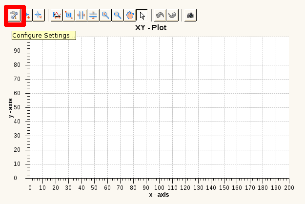

In the Plot Window you can choose which detector channel (as y-axis) you will seen over which motor axis (as x-axis). Each Plot Window contain one or two y-axis.
In the General item you make settings for the x-axis of the plot.
The Name is a given string for the name of the plot.
The Motor Axis defining the x axis of the plot. You can select one of the motor axis present in the scan module.
With Preinit Window you define, whether the plot should be cleared. False only has an effect if the axes are still the same as before.
The Scale Type defines whether the x-axis should be scaled linear or logarithmic.1
In the Y-Axis 1 item you select which detector channel will be plotted. The Y-Axis 1 is the left y-Axis in the plot window.
The Detector Channel is defining the y axis of the plot. You can select one of the detector channels present in the scan module.
The Normalize Channel is defining the channel on which the Detector Channel will normalized in the plot. You can select one of the detector channels present in the scan module.
Here you select the Color of the graph.1
Here you select the Linestyle of the graph. Such as Solid Line or Dash Line.1
Here you select the Markstyle of the graph, such as Square or Point.1
The Scale Type defines whether the y-axis should be scaled linear or logarithmic.1
In the Y-Axis 2 item you select which second detector channel will be plotted. The Y-Axis 2 is the right y-Axis in the plot window. The settings of Y-Axis 2 are the same as of Y-Axis 1.
1 Note: These settings can also be modified after creating a scan description and executing the scan by clicking on the configure button in the plot view of the EveEngine Perspective (see image below).
